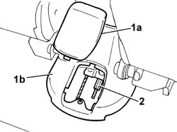

3380A04 handbrake - check travel
- Path
- Procedures > 33 BRAKES > 3380 HANDBRAKE > 3380A handbrake control and linkage > 3380A04 handbrake - check travel
- Kind
- repair procedure (removal / refitting; the operation number is the code)
- Applies to
- all engines; all production periods
- Interactive page
- https://sloeber94.github.io/elrnDB-fDbl/en/#/2584699
Applies to: all engines; all production periods
Clearance due to wear is taken up automatically The handbrake should only be adjusted after having replaced the rear brake shoes, the rear brake cylinder and the cable assembly.
Proceed with the adjustment when the vehicle is on the lift.
1. Remove cover (1a) from central tunnel (1b).
2. Make a note of the position of the nut, then loosen the adjustment nut (2a) for the handbrake cable by at least two or three turns to ensure that the cable (2b) is completely loosened.

Applies to: all engines; all production periods
Start the engine.
With the engine idling, press the brake pedal forcefully at least 10 or 15 times.
Retighten the handbrake cable adjustment nut to the original position.
Make sure that, with the handbrake lever in the rest position, the rear wheels can rotate freely.
Check that the braking action of the handbrake starts before the first notch.
At the end of the adjustment, check that the lever does not travel through more than five notches of the toothed sector.
Turn off the engine.
Refit the cover on the central tunnel.
Remove the car from the lift.
Topics that link to this page (11)
- G01 HANDBRAKE NOT EFFICIENT
- 0010K40 40,000km service coupon, emission control versions
- 0010K80 80,000km service coupon - emission control versions
- 0010M20 120,000km service coupon, emission control versions
- 0010M21 120000 km service coupon for emission control versions with air conditioner
- 0010M60 160,000km service coupon - emission control versions
- 3320B20 Rear brake shoe CYLINDER (one) left or right - Replace.
- 3380A10 handbrake lever - r+r
- 3380A30 handbrake cable - r+r
- 4420D10 rear suspension axle - r+r includes bleeding
- 4420D20 rear suspension axle -replace- includes r+r, check, parts transfer and bleeding